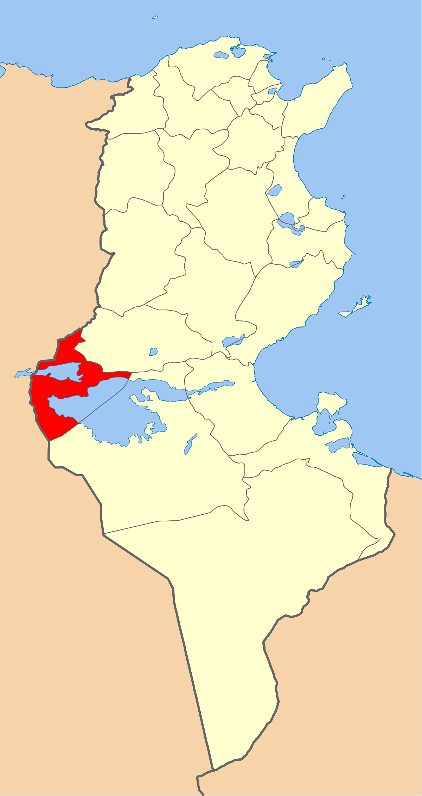
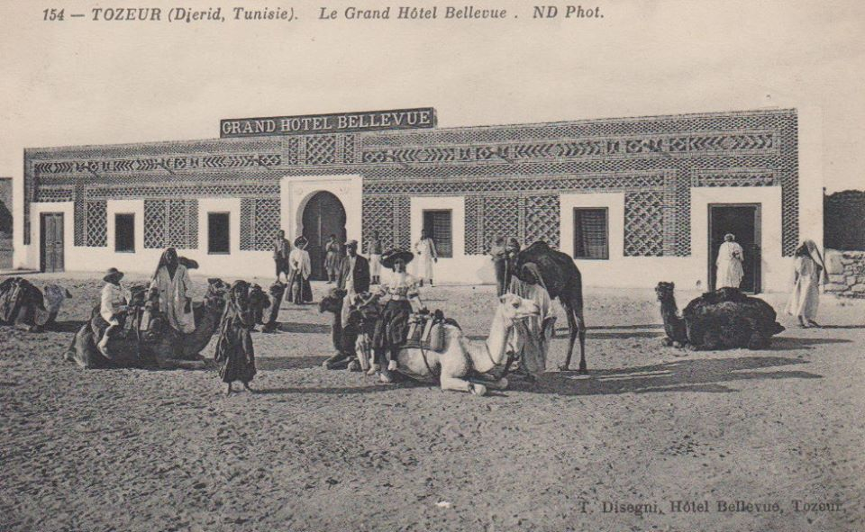
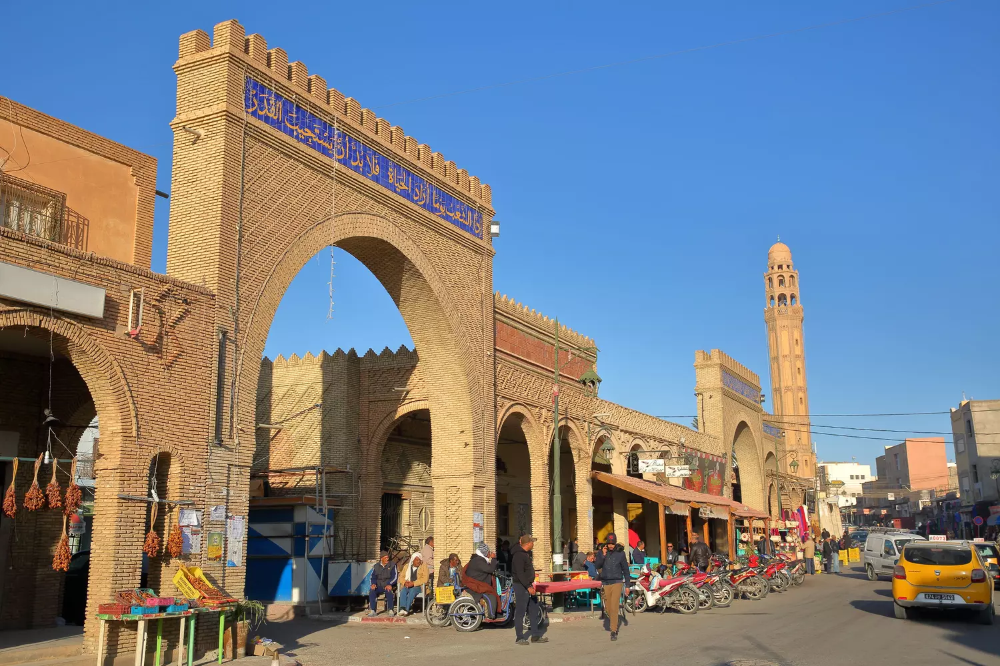
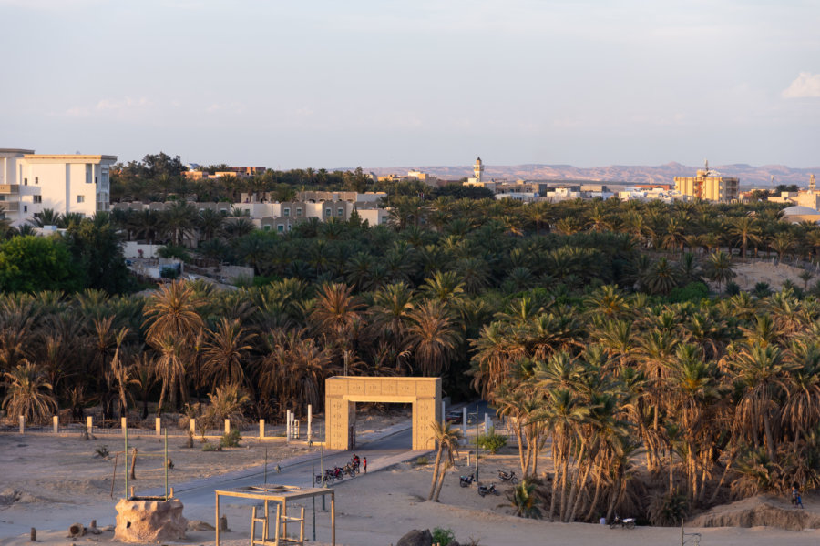
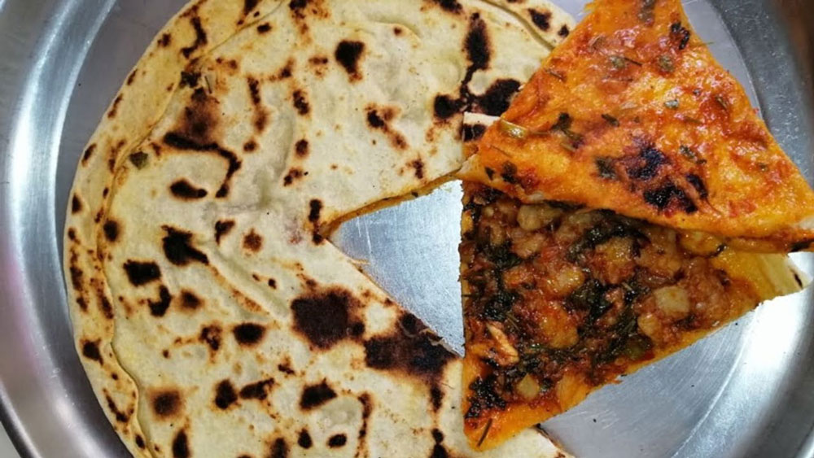
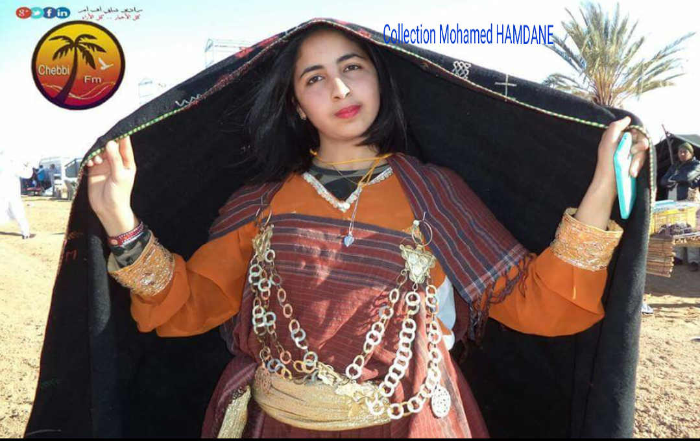

Tozeur
Capitale du Jérid, le gouvernorat de Tozeur se situe au Sud-Ouest de la Tunisie. Il est limité par les gouvernorats de Gafsa au Nord-Est, le gouvernorat de Kébili au Sud-Est et l'Algérie au Nord-Ouest.Traditionnellement agricole, le gouvernorat connaît actuellement un développement remarquable du tourisme saharien.
Parc Rass el Ain
Medina de tozeur
Mosquée Ferkous
Zoo du paradis
Quelques chiffres
Superficie
5 592,9 Km²
Nombre de maisons
17 000
Habitants
108 700
Localisation
Tozeur se trouve le long d'une colline allongée de plusieurs kilomètres, le dhrâ, qui sépare deux lacs salés, le Chott el-Jérid au Sud et le Chott el-Gharsa au Nord-Ouest. Elle fait partie du Jérid ou Djérid, dont elle constitue la plus importante des cinq oasis, aux confins du désert du Sahara. Une petite chaîne de montagnes, le djebel Morra, se trouve à l'Est de la ville. Tozeur fait à ce titre partie du pli de l'Atlas, qui s'étend du Maroc à l'Ouest de la Tunisie. La région de Tozeur appartient à l'Atlas tunisien méridional, caractérisé par ses chotts composés de bassins sédimentaires du Carbonifère supérieur.

Histoire
L'arrivée des musulmans au viie siècle coïncide avec l'apogée de l'agriculture et du commerce. Pendant le Moyen Âge, la région de Tozeur est appelée « pays de Qastiliya », comme mentionné par le célèbre géographe arabe Al-Bakri (1014-1094), qui signale aussi que Tozeur, entourée d'une grande muraille de pierre, en est la métropole. Ce nom provient de la succession de villages fortifiés appelés castella. Au fil du temps, Tozeur et ses alentours deviennent un refuge pour divers dissidents (donatistes chrétiens, chiites et kharidjites). L'esprit contestataire des habitants, qui développent une identité forte, les pousse à fomenter une révolte menée par Abu Yazid durant douze ans contre le régime des Fatimides (935-947). Ils fondent aussi des principautés indépendantes du pouvoir central, qui finissent par être reconquises par les Hafsides. Al Bakri signale l'habitude qu'ont les habitants à l'époque de consommer de la viande de chien, après avoir engraissé l'animal en le gavant de dattes.

Culture

hover me
hover me
hover me
hover me